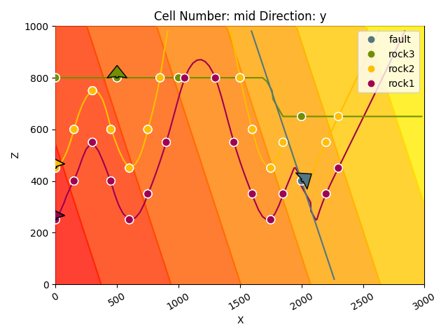
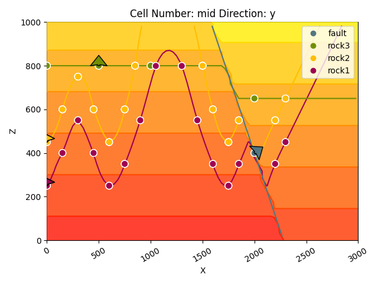
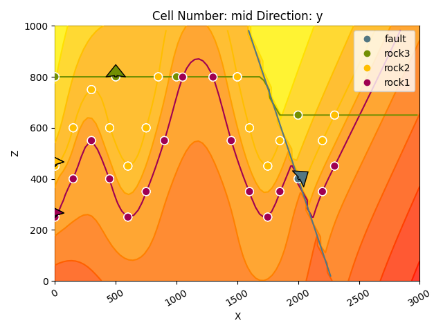

Note
Go to the end to download the full example code.
Video Tutorial “code-along”: Faults¶
This tutorial demonstrates step-by-step how to add faults to our geological models created with gempy. It follows the Video tutorial series available on the [gempy YouTube channel](https://www.youtube.com/@GemPy3D). Please follow the first part of the tutorial to learn the basics of modeling with gempy before diving into this tutorial.
Video tutorial faults: Introduction¶
The first video introduces the concept of modeling faults with GemPy - please view online before starting the tutorial.
# Required imports
import gempy as gp
import gempy_viewer as gpv
import numpy as np
# Path to input data
data_path = "https://raw.githubusercontent.com/cgre-aachen/gempy_data/master/"
path_to_data = data_path + "/data/input_data/video_tutorials_v3/"
# Create instance of geomodel
geo_model = gp.create_geomodel(
project_name = 'tutorial_model_faults',
extent=[0,3000,0,1000,0,1000],
resolution=[90,30,30],
importer_helper=gp.data.ImporterHelper(
path_to_orientations=path_to_data + "tutorial_model_faults_1_orientations.csv",
path_to_surface_points=path_to_data + "tutorial_model_faults_1_surface_points.csv"
)
)
Surface points hash: dd7b2f714c1c20cb7ce615c5c47ecc4cf3ca2ee3419e4090b2f11fbf633d459f
Orientations hash: 4043b59bbfa7012abd818f04f74e2b0667ba970dd71c781512289bc073f5a6d5
# Display a basic cross section of input data
gpv.plot_2d(geo_model);
<gempy_viewer.modules.plot_2d.visualization_2d.Plot2D object at 0x7fc565965d50>
# Map geological series to surfaces
gp.map_stack_to_surfaces(
gempy_model=geo_model,
mapping_object={
"Fault_Series1" : ('fault'),
"Strat_Series1": ('rock3'),
"Strat_Series2": ('rock2', 'rock1'),
}
)
# Define youngest structural group as fault
gp.set_is_fault(geo_model, ["Fault_Series1"])
# Compute a solution for the model
gp.compute_model(geo_model)
Setting Backend To: AvailableBackends.numpy
Chunking done: 17 chunks
Chunking done: 6 chunks
# Display the result in 2d section
gpv.plot_2d(geo_model, cell_number=20)
# gpv.plot_3d(geo_model)

<gempy_viewer.modules.plot_2d.visualization_2d.Plot2D object at 0x7fc5be56a890>
- 
- 
- 
<gempy_viewer.modules.plot_2d.visualization_2d.Plot2D object at 0x7fc566796b00>
Video tutorial 9: Fault relations¶
# ***Warning***: In the following section we will make several changes to the existing model. This includes adding new elements, groups, surface points and orientation and reordering the structural frame. Executing these cells more than once can lead to errors as things will be added twice.
# Creating a new strucutral element with surface point and orientation data
new_element = gp.data.StructuralElement(
name='fault0',
color=next(geo_model.structural_frame.color_generator),
surface_points=gp.data.SurfacePointsTable.from_arrays(
x=np.array([2750, 2750, 2750]),
y=np.array([0, 500, 1000]),
z=np.array([400, 400, 400]),
names=['fault0']*3
),
orientations=gp.data.OrientationsTable.from_arrays(
x=np.array([2750]),
y=np.array([500]),
z=np.array([400]),
G_x=np.array([0.8]),
G_y=np.array([0]),
G_z=np.array([0.6]),
names=['fault0']
)
)
# Creating a new structural group that contains the new element
group_fault0 = gp.data.StructuralGroup(
name='Fault_Series0',
elements=[new_element],
structural_relation=gp.data.StackRelationType.ERODE,
)
# Insert the fault group into the structural frame at first position (index 0)
geo_model.structural_frame.insert_group(index=0, group=group_fault0);
# Define youngest structural group as fault
gp.set_is_fault(geo_model, ["Fault_Series0"])
# Add additional information for exisitng elements on other side of fault
gp.add_surface_points(
geo_model=geo_model,
x=[2950, 2950, 2950],
y=[0, 500, 1000],
z=[500, 500, 500],
elements_names=['rock2']*3
);
gp.add_surface_points(
geo_model=geo_model,
x=[2950, 2950, 2950],
y=[0, 500, 1000],
z=[350, 350, 350],
elements_names=['rock1']*3
);
gp.add_surface_points(
geo_model=geo_model,
x=[2950, 2950, 2950],
y=[0, 500, 1000],
z=[550, 500, 500],
elements_names=['rock3']*3
);
# Display input data with the new fault and the additional input data for the other elements
gpv.plot_2d(geo_model, show_data=True, show_boundaries=False, show_lith=False)
<gempy_viewer.modules.plot_2d.visualization_2d.Plot2D object at 0x7fc5bd6f0250>
# Recompute the model with the new information
gp.compute_model(geo_model)
Setting Backend To: AvailableBackends.numpy
Chunking done: 19 chunks
Chunking done: 7 chunks
# Display the new result
gpv.plot_2d(geo_model)
<gempy_viewer.modules.plot_2d.visualization_2d.Plot2D object at 0x7fc5bd8760e0>
# Switching the order by adding a new group containing rock3 on top
gp.add_structural_group(
model=geo_model,
group_index=0,
structural_group_name="Strat_Series0",
elements=[
geo_model.structural_frame.get_element_by_name("rock3")
],
structural_relation=gp.data.StackRelationType.ERODE
)
# Removing the old group that contained rock3
gp.remove_structural_group_by_name(geo_model, group_name="Strat_Series1")
# Recompute the model with new order
gp.compute_model(geo_model)
Setting Backend To: AvailableBackends.numpy
Chunking done: 19 chunks
Chunking done: 7 chunks
# Display the new result
gpv.plot_2d(geo_model)
<gempy_viewer.modules.plot_2d.visualization_2d.Plot2D object at 0x7fc5bd718b80>
# Set fault relations manually
gp.set_fault_relation(
frame=geo_model.structural_frame,
rel_matrix=np.array([
[0, 0, 0, 0],
[0, 0, 0, 0],
[0, 0, 0, 1],
[0, 0, 0, 0]
]
)
)
# Recompute model
gp.compute_model(geo_model)
Setting Backend To: AvailableBackends.numpy
Chunking done: 18 chunks
Chunking done: 7 chunks
# Display result
gpv.plot_2d(geo_model)
<gempy_viewer.modules.plot_2d.visualization_2d.Plot2D object at 0x7fc5bb0a6800>
Video tutorial 10: Fault groups and cross-cutting faults¶
# Create instance of new geomodel
geo_model_cross = gp.create_geomodel(
project_name = 'tutorial_model_faults_2',
extent=[0,1000,0,500,0,1000],
resolution=[50,25,50],
importer_helper=gp.data.ImporterHelper(
path_to_orientations=path_to_data + "tutorial_model_faults_2_orientations.csv",
path_to_surface_points=path_to_data + "tutorial_model_faults_2_surface_points.csv"
)
)
Surface points hash: 38f5cea475a16c39c086323290f300d93f77b426cc59dd8854ecd80a3d1d52e5
Orientations hash: 506732f29984a1e788b2e84f833a82b60dcb1395471177153b4b18958acd5947
# Map geological series to surfaces
gp.map_stack_to_surfaces(
gempy_model=geo_model_cross,
mapping_object={
"Fault_Series2" : ('fault3', 'fault2'),
"Fault_Series1" : ('fault1'),
"Strat_Series": ('rock3', 'rock2', 'rock1'),
}
)
# Define youngest structural group as fault
gp.set_is_fault(geo_model_cross, ["Fault_Series1", "Fault_Series2"])
# Change color of basement for better visibility
geo_model_cross.structural_frame.basement_color="#F7B529"
geo_model_cross.structural_frame.structural_elements[0].color = '#000000'
geo_model_cross.structural_frame.structural_elements[1].color = '#36454F'
geo_model_cross.structural_frame.structural_elements[2].color = '#D3D3D3'
# Set fault relations manually
gp.set_fault_relation(
frame=geo_model_cross.structural_frame,
rel_matrix=np.array([
[0, 1, 1],
[0, 0, 1],
[0, 0, 0],
]
)
)
# Display input data on cross section
gpv.plot_2d(geo_model_cross)
<gempy_viewer.modules.plot_2d.visualization_2d.Plot2D object at 0x7fc566686f80>
# Compute model
gp.compute_model(geo_model_cross)
Setting Backend To: AvailableBackends.numpy
Chunking done: 7 chunks
# Display reusult on cross section
gpv.plot_2d(geo_model_cross)
# sphinx_gallery_thumbnail_number = -1
<gempy_viewer.modules.plot_2d.visualization_2d.Plot2D object at 0x7fc56592cee0>
Total running time of the script: (1 minutes 27.853 seconds)